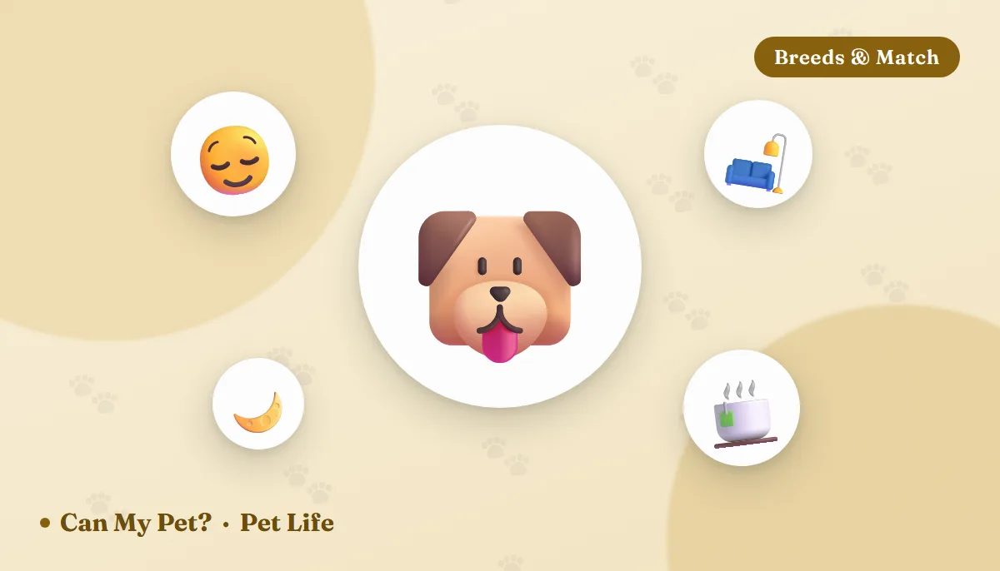

10 Calmest Dog Breeds — And What Actually Predicts a Mellow Adult Dog

Some dogs seem to run on a different battery — happy to nap most of the day, unfazed by a doorbell, content to just be near their person. If that sounds like the household you want, breed is a real predictor, but it's not the whole story. Here's what vets and behaviorists actually mean by a "calm" breed, the 10 that come up again and again, and why a few famously chill-looking breeds can still throw you a curveball as puppies.
What "calm" actually means in a dog
Trainers and veterinary behaviorists tend to break calmness into a few separate traits that don't always travel together. Low reactivity is about how a dog responds to triggers — a knock at the door, another dog on a walk, a dropped pan — some breeds startle and recover in seconds, others stay wound up. Low prey drive and low arousal determine how easily a dog gets keyed up chasing, herding or guarding instincts versus settling back down. Exercise needs relative to size matter more than raw energy level; a dog that's satisfied by two moderate walks a day reads as "calm" in daily life even if it's not lazy. And genuine temperament stability, distinct from training, means a dog whose baseline mood doesn't swing much with visitors, weather or routine changes.
The 10 calmest dog breeds
1. Greyhound The 40-mph couch potato
Despite being built for speed, Greyhounds are famous among vets and rescues for sleeping up to 18 hours a day and asking for little beyond one or two brisk walks. They're gentle, quiet indoors, and rarely bark. Their short coat and low body fat mean they feel the cold, so a jacket in winter is often necessary, and their thin skin bruises and tears more easily than most breeds.
Best for: owners who want a calm large dog with minimal exercise demands.
2. Newfoundland The gentle giant
Newfoundlands are famously patient and sweet-natured, often described by breed clubs as having an almost deliberate, unhurried way of moving through the world. They're wonderful with children and rarely rattled by chaos. The tradeoffs are real ones: heavy shedding, a thick coat that struggles in heat, and a short lifespan typical of giant breeds, so budget for size accordingly.
Best for: families with space who want a steady, unflappable presence.
3. Bernese Mountain Dog Steady and devoted
Bred as farm dogs that needed a level head around livestock and children alike, Berners are calm, loyal and rarely aggressive or anxious. They do need moderate daily exercise to stay content, and their thick double coat sheds heavily. Vet checkups matter more with this breed — they're prone to several serious health conditions and have a shorter average lifespan than most.
Best for: active families wanting a large, even-tempered dog that's genuinely good with kids.
4. Basset Hound Low-to-the-ground and unbothered
Bassets are famously laid-back and content with a short daily walk, rarely showing the intensity their scenting instincts might suggest. Their calm nature comes with a stubborn streak that can make training slower going. Their long ears and skin folds need regular checking to prevent infections, and their build makes them prone to back problems.
Best for: owners who want a mellow, low-energy dog and don't mind a bit of independence.
5. Cavalier King Charles Spaniel Small, affectionate, adaptable
Cavaliers combine a calm, affectionate temperament with genuine adaptability to apartment or house life. They're content with short walks and plenty of lap time, and rarely show the reactivity some toy breeds do. Watch for a higher breed rate of heart and spinal conditions, so ask breeders about health clearances.
Best for: owners wanting a calm, portable companion with real emotional warmth.
6. English Bulldog Low-key but heat-sensitive
Bulldogs need very little exercise and are famously unbothered by most household chaos, happy to doze through it. As a flat-faced (brachycephalic) breed, they overheat easily and can struggle with breathing, so climate control and short, cool walks are non-negotiable, and vet bills tend to run higher than average.
Best for: owners wanting a low-exercise, low-drama dog who can manage heat sensitivity.
7. Saint Bernard Patient with everyone
Saint Bernards are known for an easygoing patience that makes them a longtime favorite for calm, gentle households, including ones with young kids. Like other giant breeds they need only moderate exercise but do drool and shed considerably, and their size means a shorter lifespan and higher food and vet costs.
Best for: families with room for a very large, very patient dog.
8. Bullmastiff Quiet, watchful, low-energy
Bullmastiffs are naturally low-energy and quiet indoors, content to watch over the household rather than actively patrol it. They're calm with familiar people but can be reserved with strangers, so early socialization matters. Their size alone means leash strength is worth training for, even though they rarely pull without reason.
Best for: owners wanting a calm, protective presence without high exercise needs.
9. Clumber Spaniel The mellow sporting breed
Unlike most sporting spaniels, Clumbers are notably laid-back — bred to hunt at a slow, methodical pace rather than a frantic one, and it shows in their everyday temperament. They're affectionate and easygoing at home. Their heavy coat sheds and drools more than people expect from a "calm" breed, so factor in regular grooming.
Best for: owners wanting a gentle, low-drama dog with a sporting-breed look.
10. Scottish Deerhound Dignified and quiet
Despite their sighthound speed, Deerhounds are gentle, quiet and famously dignified indoors, much like a taller cousin of the Greyhound. They need brief bursts of exercise rather than constant activity and are rarely vocal. Their large size and deep chest carry a higher risk of bloat, so smaller, more frequent meals are often recommended.
Best for: owners with space who want a calm, quiet giant-breed sighthound.
Why "calm" breeds can still have a wild puppy phase
Breed temperament describes the adult dog, and that distinction catches a lot of new owners off guard. Even famously mellow breeds like Newfoundlands, Bernese Mountain Dogs and Cavaliers go through a genuinely energetic, mouthy, easily overstimulated puppyhood that can last well into the second year for larger breeds. The calm reputation is earned later, once training, maturity and physical development catch up. Conversely, a handful of breeds that look sleepy — Basset Hounds and Bulldogs among them — can be surprisingly stubborn or vocal in ways that have nothing to do with energy level. If a truly low-maintenance puppy phase matters as much as the eventual adult temperament, an adult rescue dog with a known, observed personality often beats a guess based on breed alone.
Practical considerations beyond temperament
- Calm still needs a routine. Even low-energy breeds do better with a predictable walk and feeding schedule; calmness isn't the same as needing nothing.
- Giant breeds cost more. Food volume, vet care sized to weight, and larger everything (crates, beds, medication doses) add up fast. The pet cost calculator gives a realistic first-year estimate by size.
- Grooming varies wildly within "calm." A Bulldog's coat care and a Newfoundland's are worlds apart, even though both breeds are low-energy.
- Health screening matters more in some breeds. Giant breeds and flat-faced breeds carry above-average risk for specific conditions; ask breeders for health clearances or ask shelters what's known about a dog's history.
- A meet-and-greet beats a breed list. Whenever possible, spend real time with an individual dog before deciding — temperament tests and a few visits reveal more than averages.
Frequently asked questions
What is the single calmest dog breed overall?
Greyhounds are the breed vets and rescues cite most consistently for genuine calmness — they're famous for sleeping most of the day and needing only brief exercise. Newfoundlands and Basset Hounds are close behind for different reasons: an unhurried temperament and a low-key personality, respectively.
Are small dogs always calmer than large dogs?
Not necessarily. Size and calmness are largely unrelated — some of the calmest breeds, like Greyhounds and Newfoundlands, are quite large, while some small breeds (Chihuahuas, Jack Russell-type terriers) are among the most reactive and energetic.
Do calm dog breeds still need training?
Yes. A calm temperament reduces reactivity and exercise demands, but it doesn't replace basic training, socialization or house manners. Stubborn calm breeds like Basset Hounds can actually be slower to train than more excitable ones.
Why did my "calm breed" puppy turn out so energetic?
Breed temperament describes adult dogs. Most calm breeds, especially larger ones, go through a genuinely active, easily overstimulated puppy phase that can last a year or more before the breed's typical calm adult temperament settles in.
Is an adult rescue dog a safer bet for a calm household than a puppy?
Often, yes. An adult dog's actual temperament, energy level and reactivity are already visible, which removes much of the guesswork breed alone can't answer.
By the CanMyPet Editorial Team · Reviewed against American Kennel Club breed guidance and veterinary sources · Published August 2026.